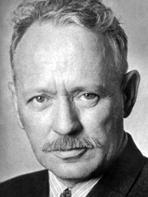

«На Дону я – казак, а на Урале – казах»


K 115-летию со дня рождения
Михаила Шолохова
М.Шолохов – русский советский писатель, журналист и киносценарист, военный корреспондент (1941 - 1945), полковник (1943), Лауреат Нобелевской премии по литературе, Сталинской и Ленинской премий. Дважды Герой Социалистического Труда.
На страницах сайта можно познакомиться с материалами, связанными с жизнью и творчеством писателя в Приуралье.
Михаил Александрович Шолохов
(1905 г. – 1984 г.)